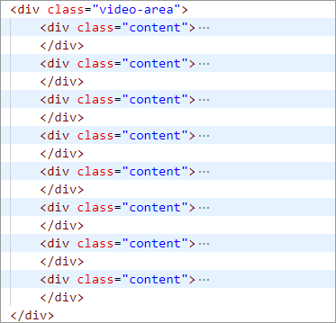
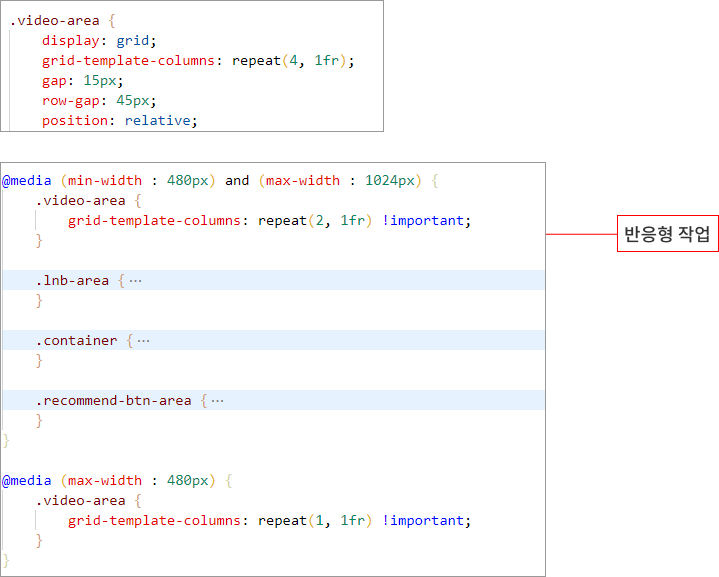
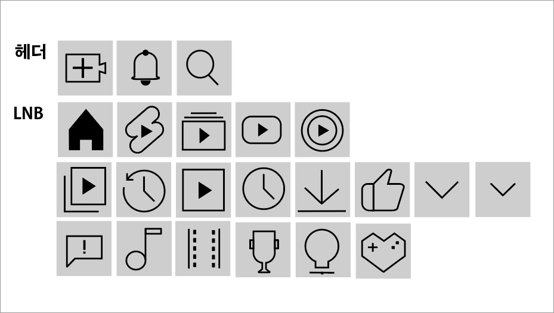

유튜브 메인페이지 클론코딩
Grid 반응형을 활용한 유튜브 메인 페이지 구현
Grid를 사용하여 유튜브 영상들을 나열하고, 모바일, 태블릿, PC 에서 보이는 웹 페이지가 안정적으로 보이도록 재조정하는 반응형 웹으로 설계하였습니다.
- 작업기간 5일
- 기여도 100%
- 제작방식 HTML + SCSS + jQuery
- 반응형웹 PC , Tablet, Mobile
UI & 코드 간략 설명

HTML
CSS
Youtube에 사용되는 아이콘은 일러스트로 작업하였습니다.
